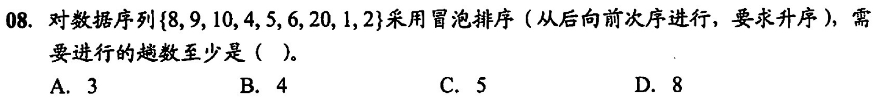
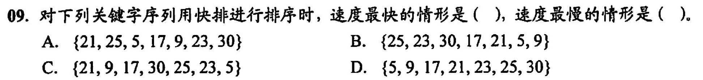
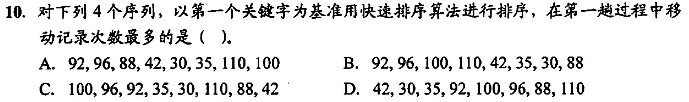

交换类排序的排序趟数与原始状态有关
冒泡排序🫧
两个两个的依次比较，把大的放后边小的放前边，循环到全部排序完成(没有发生交换)即可
空间复杂度：O(1)
时间复杂度：O(n2)
稳定排序
- 如果遇到相同的就不会交换，所以稳定
每一趟最后一个元素都是最大的元素（从小到大排序）
元素从小到大时
- 最坏的比较次数=
- 最好的比较次数=
- 最坏的比较次数=
快速排序
快速排序基于分治法（每次都给他分成更小的块进行排序，分而治之）
任取一个枢轴赋值给pivot，把数组分成小于pivot的和大于pivot的两个数组
然后对这两个数组再重复这种方法直到数组的大小为1或空
空间复杂度：O(log2n)
分治法一般用递归实现，所以容量应该于递归调用的最大深度一致
- 最好情况(每次都分成等长的两部分)下为O(log2n)
- 最坏情况(待排序序列基本有序，需要n-1次递归调用)下为O(n)
时间复杂度：O(nlog2n)
- 最坏情况(待排序序列基本有序，需要n-1次递归调用)下为O(n2)
不稳定排序
平均性能最优的内部排序
每次排序后枢轴一定在排序的最终位置上（用于计算某一趟结果的题）
适合数据随机或者数据量很大的时候，不适合基本已经有序的
枢轴把两边数组分成等长时速度最快
错题集

答案与解析：
答案： C
解析：
先从右往左👈找比46小的(40)进行交换
得到{40, 79, 56, 38, 46, 84}
再从左往右👉找比46大的(79)进行交换
得到{40, 46, 56, 38, 79, 84}
再从右往左👈找比46小的(38)进行交换
得到{40, 38, 56, 46, 79, 84}
再从左往右👉找比46大的(56)进行交换
得到{40, 38, 46, 56, 79, 84}
此时46处于最终位置，最后一个结果即为一次划分的结果
答案与解析：
答案： A
解析：
- 如果是插入排序，排序两趟后前三个元素一定是有序的(不管正序倒序)，这里显然不是，排除
- 如果是冒泡排序，排序两趟后最前面两位或者最后面两位一定是最终的数，这里显然不是，排除
- 如果是选择排序，应该和冒泡排序一样有两位处于最终位置上(最左/右端)，这里显然不是，排除
- 如果是快速排序，两趟排序后应该有3个元素在最终位置上，或者两个元素在最终位置上(有一个元素在边界)
角标 0 1 2 3 4 5 6 7 原数组 2 1 4 9 8 10 6 20 最终数组 1 2 4 6 8 9 10 20 
答案与解析：
答案： C
解析：
第一趟把1冒泡到最前面，数组变成{1, 8, 9, 10, 4, 5, 6, 20, 2}
第二趟把2冒泡到最前面，数组变成{1, 2, 8, 9, 10, 4, 5, 6, 20}
第三趟把4冒泡到最前面，数组变成{1, 2, 4, 8, 9, 10, 5, 6, 20}
第四趟把5冒泡到最前面，数组变成{1, 2, 4, 5, 8, 9, 10, 6, 20}
第五趟把6冒泡到最前面，数组变成{1, 2, 4, 5, 6, 8, 9, 10, 20}
答案与解析：
答案： A D
解析：
快速排序中，枢轴把数组分成等长数组时最快（数组中正好有一半大于第一位数，一半小于第一位数）
数组越接近有序就越慢
A: 第一次分为{9, 17, 5, 21, 25, 23, 30}, 第二次分为{17, 9, 5, 21, 23, 25, 30};逆序数=2
B: 第一次分为{9, 23, 5, 17, 21, 25, 30}, 第二次分为{5, 9, 23, 17, 21, 25, 30};逆序数=3
C: 第一次分为{5, 9, 17, 21, 25, 23, 30}, 第二次分为{5, 9, 17, 21, 23, 25, 30};逆序数=4
D: 第一次分为{5, 9, 17, 21, 23, 25, 30}, 第二次分为{5, 9, 17, 21, 23, 25, 30};逆序数=0
蓝色的是第一趟的枢轴，绿色的是第二趟的枢轴
可以看出A选项第二次分的最平均，所以最快
D选项最接近有序(逆序数越小就是越正序，反之就是越倒序，越接近(n-1)/2就是越无序)，这里找最慢就是逆序数最接近0或者6的
答案与解析：
答案： B
解析：
根据第一个错题解析进行移动数次数
A:{35, 30, 88, 42, 92, 96, 110, 100};有4个元素移动了，交换了3次
B:{88, 30, 35, 42, 92, 110, 100, 96};有8个元素移动了，交换了7次
C:{42, 96, 92, 35, 30, 88, 100, 110};有4个元素移动了，交换了3次
D:{35, 30, 42, 92, 100, 96, 88, 110};有2个元素移动了，交换了1次
绿色的是被移动的元素，加粗的是枢轴
王道书上的移动记录次数用的是被移动的元素个数，我觉得用交换次数也可以
答案与解析：
答案： C
解析：
11 18 23 68 69 73 93 I 68 11 18 69 23 93 73 II 68 11 69 23 18 93 73 III 93 73 68 11 69 23 18 IV 68 11 69 23 18 73 93
快速排序交换一次，所以就有一个枢轴在最终位置，所以找与排序后的数组相同位置的元素(表中绿色的)个数为1的项，或者大于1的项（第2，3个相同的元素在两端）
由表格得出只有III和IV符合
答案与解析：
答案： D
解析：
同上一个，使用表格法
2 5 12 16 28 32 60 72 A 5 2 16 12 28 60 32 72 B 2 16 5 28 12 60 32 72 C 2 12 16 5 28 32 72 60 D 5 2 12 28 16 32 72 60
第二趟结果只能是3个处于最终位置的或者2个处于最终位置的(其中至少一个在两端)
显然只有D不符合